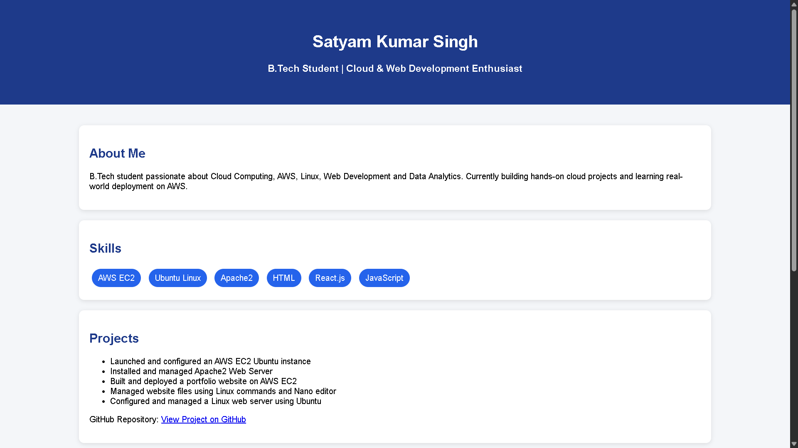
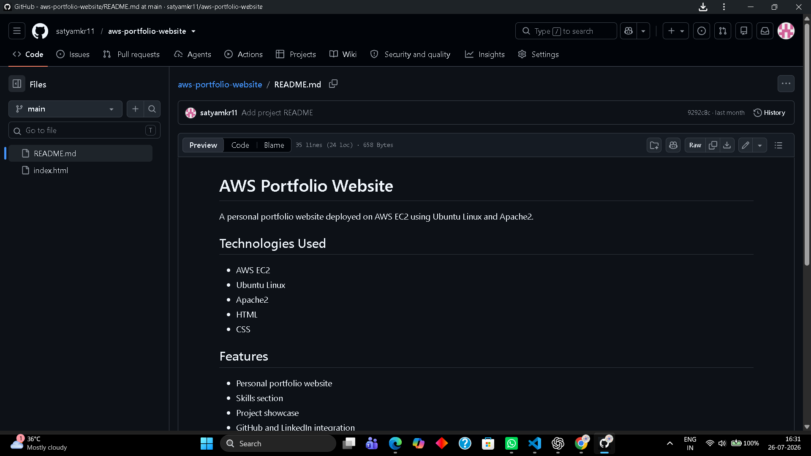
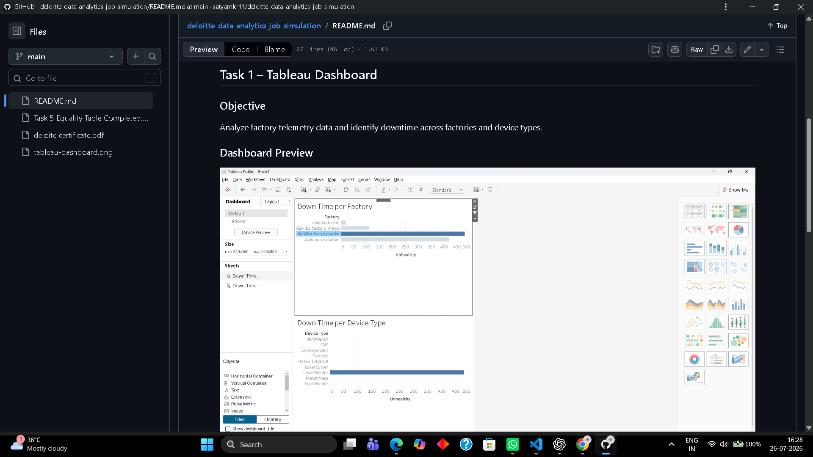
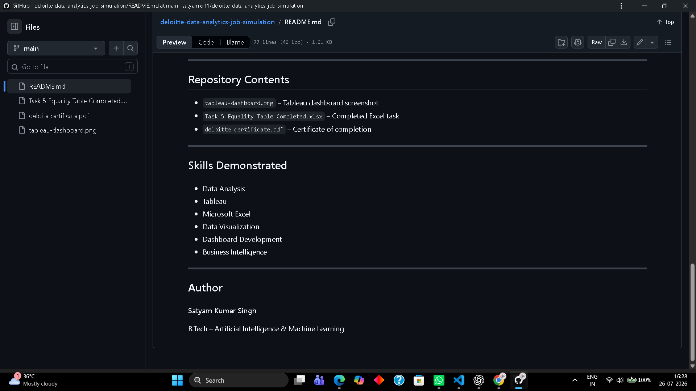
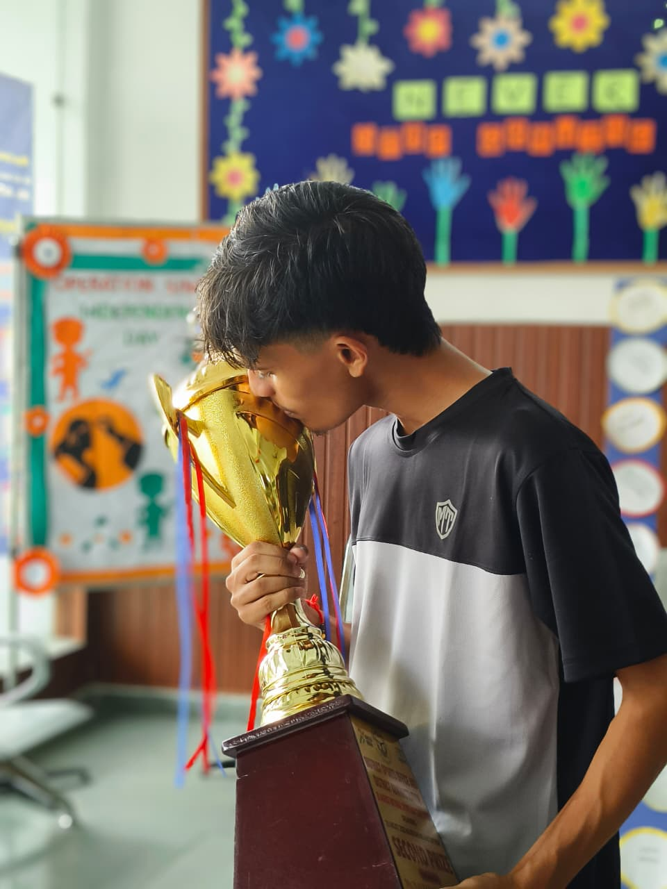
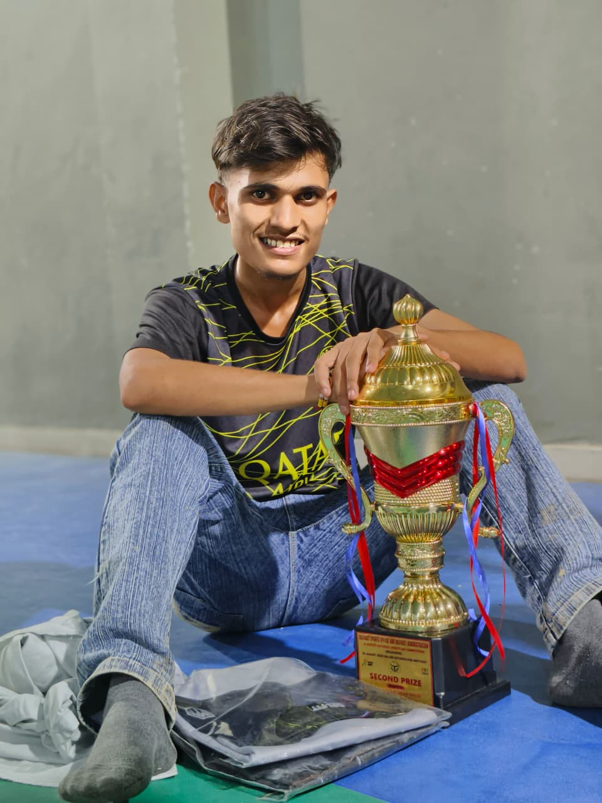

AI • Machine Learning • Cloud
AI/ML Engineer building practical AI and cloud solutions.
I'm Satyam Kumar Singh, a third-year B.Tech Computer Science (AI & Machine Learning) student passionate about building intelligent software, deploying cloud solutions, and solving real-world problems through Python, AWS, and modern AI technologies. I enjoy turning ideas into practical applications while continuously learning Machine Learning, Deep Learning, Cloud Computing, and Generative AI.

AI/ML Engineer
Python • AWS • Machine Learning • Cloud • Problem Solving
About
Focused on becoming a practical, project-ready AI/ML Engineer.
I'm pursuing a B.Tech in Computer Science & Engineering with a specialization in Artificial Intelligence and Machine Learning. My focus is on developing strong foundations in Python, Machine Learning, Cloud Computing, Data Analytics, and Software Engineering through hands-on projects and continuous learning.
Beyond academics, I have represented my teams at the national level in Table Tennis and Football. These experiences strengthened my discipline, leadership, teamwork, resilience, and problem-solving mindset, qualities I bring into every technical project I build.
Skills
Technical toolkit
Programming
Python intermediate, Java basics, HTML, CSS, GitHub, problem solving.
AI and Data
AI fundamentals, GenAI concepts, data analytics, exploratory analysis, Python for data science.
Cloud and Deployment
AWS, EC2, Ubuntu, Apache2, Linux command line, static website hosting.
Professional Strengths
Discipline, teamwork, leadership, communication, adaptability, learning speed.
Currently Learning
Growing toward production-ready AI skills
Deep Learning
PyTorch
Transformers
RAG
AI Agents
Cloud AI Workflows
Projects
Proof of work
AWS Deployment
AWS Portfolio Website
Deployed a static portfolio on AWS EC2 with Ubuntu and Apache2.
Built and deployed a portfolio website on an AWS EC2 Ubuntu instance using Apache2, Linux commands, and manual server configuration.
GenAI Analytics
Tata Forage GenAI Data Analytics Simulation
Applied GenAI concepts to data analysis, reporting, and AI-driven strategy.
Completed practical tasks around exploratory data analysis, risk profiling, delinquency prediction with AI, business reporting, and AI-driven collections strategy.
Data Analytics
Deloitte Data Analytics Job Simulation
Built a Tableau dashboard and completed Excel-based equality score analysis.
Completed a Deloitte Forage analytics simulation using Tableau, Excel, and business reporting to analyze operational data and communicate insights.
Portfolio V2
Modern AI Engineer Portfolio
Designed a professional portfolio for internship and AI/ML opportunities.
A recruiter-friendly personal website presenting skills, certifications, education, projects, and leadership achievements in a clean static frontend.
Education
B.Tech CSE - Artificial Intelligence and Machine Learning
Vishveshwarya Group of Institutions
3rd year undergraduate student with current CGPA of 8.3.
AI/ML Engineer
Building depth in Python, machine learning, cloud, data analytics, and deployable AI applications.
Certifications
Learning credentials
AWS
AWS Cloud Certificate
Cloud computing and AWS foundation
AWS
AWS AI Certificate
Artificial intelligence learning on AWS
Tata Forage
GenAI Powered Data Analytics
Issued July 8, 2026
Deloitte
GenAI Certificate
Professional learning credential
Google
AI Fundamentals
Coursera course certificate
Google
AI for Brainstorming and Planning
Coursera course certificate
Python
Python Essentials 1
Programming foundation credential
Python
Python for Data Science
Data science and Python foundation
Oracle
Oracle Certificate
Technology learning credential
Media
Photos, projects, and sports moments

Project
AWS Portfolio Website
Earlier EC2-hosted portfolio version showing cloud deployment practice.

Project
AWS README Overview
Repository documentation showing technologies used, features, and deployment learning.

Data Analytics
Tableau Dashboard
Deloitte simulation dashboard analyzing factory downtime and device-level performance.

Repository
Deloitte Project README
Project documentation highlighting analytics tools, repository contents, and skills demonstrated.

Sports
Championship Moment
Sports discipline and competitive experience behind my engineering mindset.

Achievement
Tournament Recognition
Table tennis and football achievements built through consistency and practice.
Football
Football Training
A field moment showing the team-sport side of my competitive background.
Training
Practice Session
A training image representing consistency, strength, and daily improvement.
Video
Sports Highlight
Short clip showing movement, discipline, and athletic practice.
Video
Training Clip
Portfolio media for the achievements and leadership story.
Video
Performance Clip
Short-form video proof for the sports background section.
Video
Training Highlight
Additional sports clip showing practice, movement, and consistency.
Leadership
National-level sports discipline applied to engineering growth.
Table Tennis
Two-time national champion, league player, and zonal qualifier.
Football
National champion, league experience, and zonal qualification background.
Competitive Mindset
Consistency, resilience, pressure handling, team coordination, and disciplined improvement.
Contact